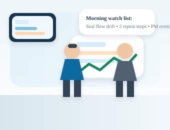
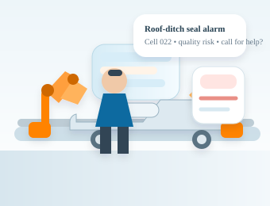
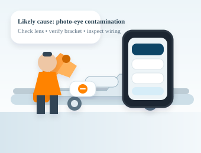
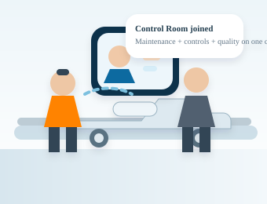
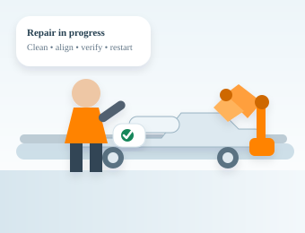
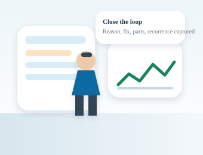

Prepared for
Nissan Smyrna senior management & maintenance leadership
Nissan Smyrna senior management & maintenance leadership
This page is built around an automotive paint-shop example so Nissan leaders can picture the target state in a specific, operationally credible setting. It combines a journey map with a storyboard, because the audience needs both the process view and the human view.
The swimlane view makes the role handoffs explicit: operator, maintenance, Control Room, and reliability are all part of one operating loop from prediction to response to learning.
Knows the watch list and whether a line or cell is already at risk.
Watch / inspect / intervene states make the issue visible before a full stop.
Safe first action, guided troubleshooting, or call-for-help trigger.
Does not re-explain the issue after maintenance arrives.
Verifies the line condition and production impact.
Next shift sees what happened and what to watch.
Starts with priority work, open issues, and parts constraints.
Asset, symptom, and likely cause are attached automatically.
Similar failures, PM history, manuals, and parts availability come together.
Controls / reliability / vendor support join the same thread.
Fix, duration, and evidence stay with the original event.
Reason code, corrective action, owner, and recurrence flag are captured.
Sees fleet-style visibility across line, area, and chronic bad actors.
Can support before the issue becomes a plant-level problem.
No vague ticket or second-hand phone call needed.
Quality, controls, and remote expertise can be pulled in fast.
Confirms line, cell, and process condition after repair.
Patterns feed back into standard response logic.
Repeat issues, overdue PMs, and asset health are visible before production starts.
Can distinguish noise from chronic risk.
Can see how quickly and how cleanly incidents are handled.
Gets a stronger root-cause and bad-actor basis for action.
Can connect maintenance actions to uptime and quality outcomes.
Every fix strengthens future performance and future AI.
Each persona's shift is shown through two lenses simultaneously. Left: what the person does, needs, and feels at each moment. Right: what the data architecture does (or fails to do) behind the scenes — contrasting today's legacy gaps with what a unified data fabric enables.
Walking in blind — did night shift leave a mess? Is the cell already at risk? The operator needs context before the first body rolls in, not after.
Holding production pace while visually inspecting vehicle bodies. The cognitive load is high when the HMI only shows raw codes with no quality context.
"Do I stop the line or can I fix this myself?" That decision needs to happen in seconds. If the system can't tell them, they call for help and the clock starts.
Operator has already explained what happened twice by radio before the tech arrives. Machine is idle. Every retelling is wasted downtime.
Needs to know the machine is back in spec — not "probably fine." A verified signal from maintenance or the system gives them the confidence to release the line.
A 15-minute paper close-out after a full shift is the worst part. If the system asks for one structured entry instead of a blank form, they'll do it — and the data will be better.
The scenes below show the operating model through a realistic paint-shop maintenance scenario.

Paint-shop leadership begins with the watch list: open work, repeat faults, at-risk assets, and priority handoffs before the first bodies roll into the booth.

A roof-ditch seal or paint-process issue appears. The operator sees the asset, line context, and likely impact immediately instead of interpreting a raw alarm in isolation.

The maintenance technician opens the case on a tablet and gets the likely cause chain, similar incidents, parts context, and the right SOP without leaving the line.

If the issue affects throughput or quality, the Control Room, controls engineer, and reliability resources join the same case — all looking at the same event record.

The repair is executed, the line is verified, and the maintenance action is logged against the original event. No re-keying, no second narrative.

The shift captures reason code, corrective action, parts used, and recurrence flags so the next team starts smarter and the plant builds a real knowledge base.